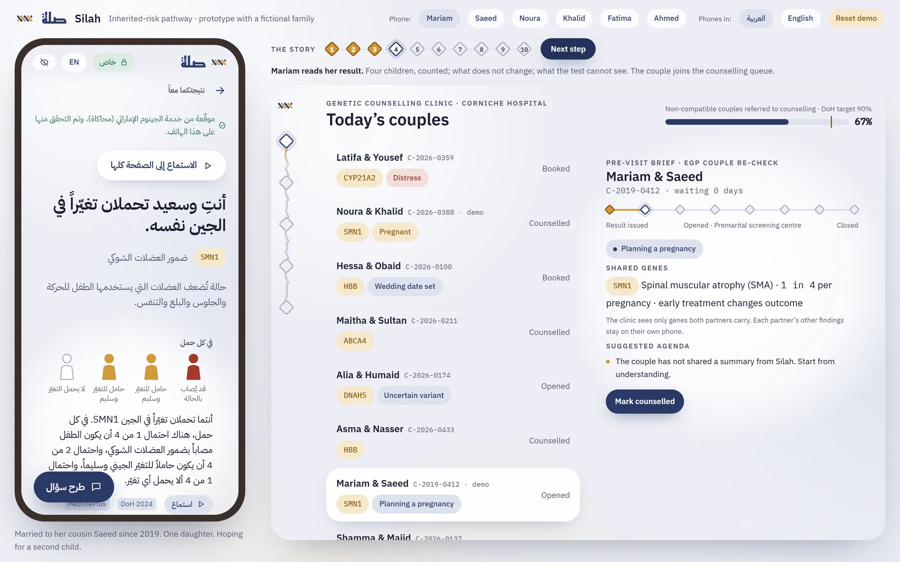
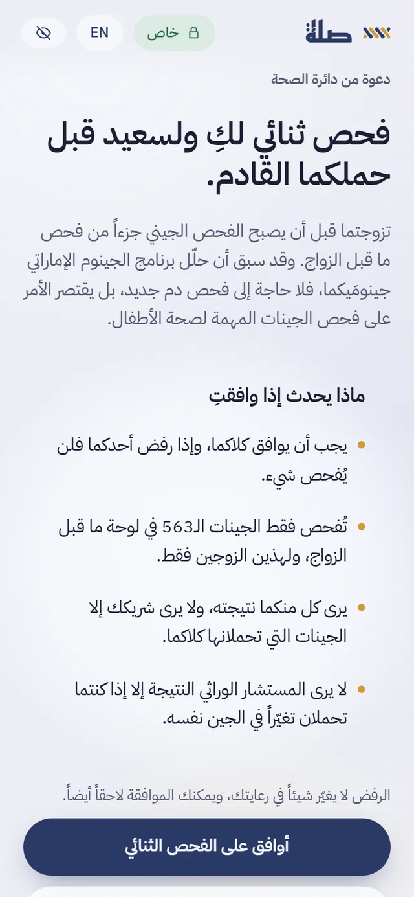
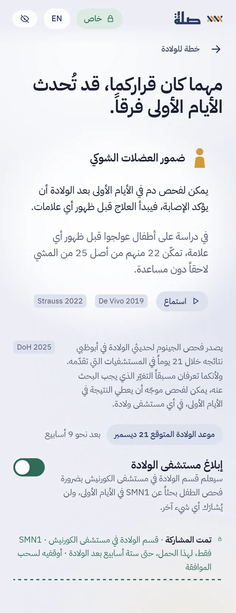
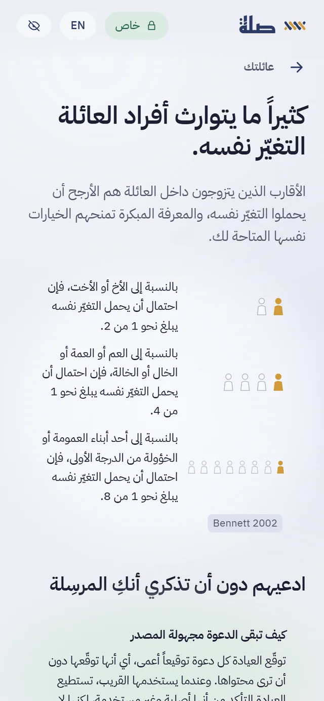
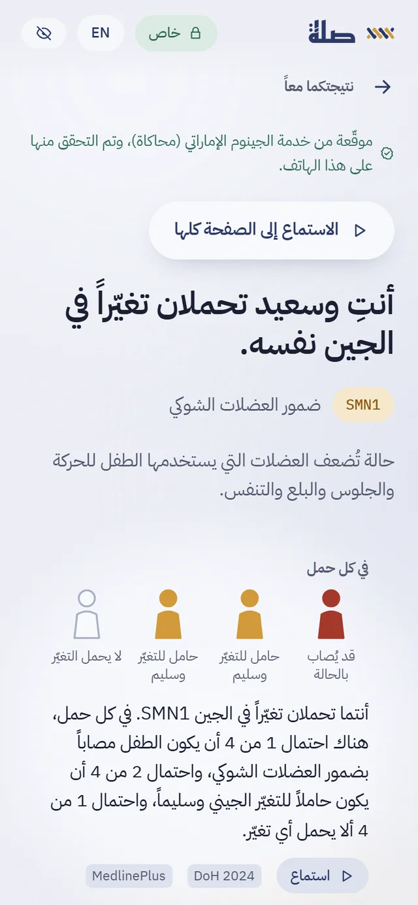
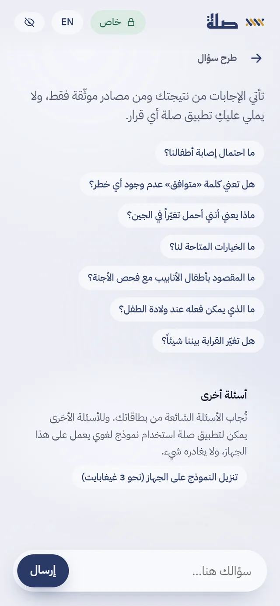
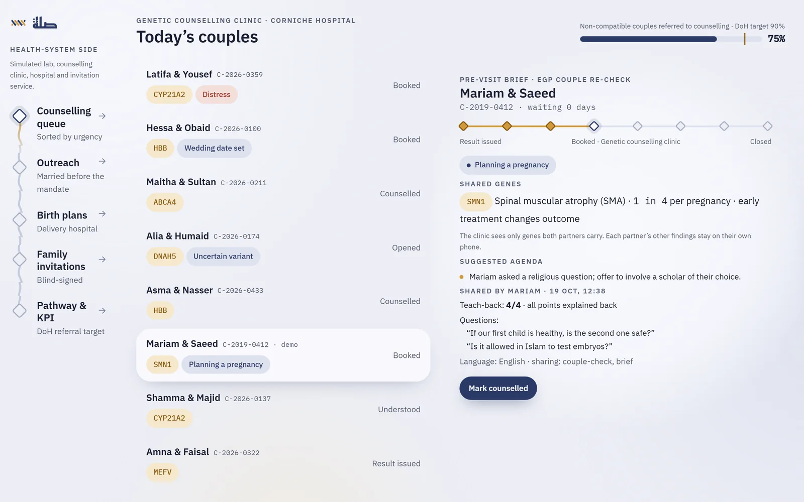

فهمٌ خاص لخطر الأمراض الوراثية، وتصرّفٌ في الوقت المناسب.
صلة رفيق على الهاتف ومسار داخل المنظومة الصحية للأسر في أبوظبي، بالعربية والإنجليزية. يشرح نتيجة الفحص الجيني للزوجين، ويوصلهما إلى مستشار وراثي، ويخطط لفحص عند الولادة، ويتيح دعوة الأقارب دون ذكر المرسِل. ولا يقرر عن أحد أبداً.
نموذج أولي يعمل بعائلة خيالية. يعمل داخل متصفحك ودون اتصال بالإنترنت، ولا يُرسَل أي شيء تفعله إلى أي مكان.

العرض التجريبي: هاتف أحد أفراد الأسرة والمنظومة الصحية جنباً إلى جنب في متصفح واحد. واجهة العيادة في هذا النموذج بالإنجليزية.
15,628ولادة لمواطنين إماراتيين في أبوظبي عام 2024
3 من كل 4على الأقل من ولادات المواطنين هذا العام هي لأزواج لم يشملهم الفحص الجيني قبل الزواج (تقدير)
900,000+جينوم إماراتي سبق تحليله ضمن برنامج الجينوم الإماراتي
17مستشاراً وراثياً وأخصائياً في علم الوراثة الإكلينيكي لنحو 11 مليون نسمة في الدولة
كيف يعمل
ثلاث لحظات ما زالت فيها معرفة الخطر تغيّر النتيجة
يشمل الفحص الإلزامي قبل الزواج الأزواج الذين يتزوجون اليوم. ويصل صلة أيضاً إلى الأزواج الذين تزوجوا قبله، وإلى الأطفال الذين ينتظرونهم، وإلى الأقارب الذين يشاركونهم الجينات.

1 · قبل الحمل القادم
فحص ثنائي باستخدام جينومات محفوظة أصلاً
تدعو المنظومة الصحية الأزواج الذين تزوجوا قبل إلزامية الفحص، وتُرتَّب الدعوات بحسب ما صرّحوا به فقط، لا بحسب جيناتهم. يوافق الزوجان كلاهما، ولا حاجة إلى فحص دم جديد.
يعرف الزوجان المعرّضان للخطر ذلك قبل الحمل القادم، ويصلان إلى مستشار وراثي.

2 · عند الولادة
فحص في الأيام الأولى، مهما كان قرارهما
يكفي زر واحد لإبلاغ مستشفى الولادة بالتغيّر الذي يجب البحث عنه. يصدر فحص الجينوم لحديثي الولادة من دائرة الصحة نتائجه خلال 21 يوماً، أما الفحص الموجّه للتغيّر المعروف فيمكن أن يعطي النتيجة في الأيام الأولى، في أي مستشفى ولادة.
في حالات مثل ضمور العضلات الشوكي أو داء كرابي، يمكن أن يبدأ العلاج قبل ظهور العلامات.

3 · في العائلة
دعوة الأقارب دون ذكر المرسِل
كثيراً ما يتوارث أفراد العائلة التغيّر نفسه. يرسل من يحمل التغيّر دعوات تستطيع العيادة التحقق من صحتها، لكنها لا تستطيع معرفة مرسلها، بفضل التوقيعات العمياء (RFC 9474).
يأتي الأقارب إلى الفحص مبكراً ولسبب واضح، دون كشف أحد.

للأسر
نتيجة يفهمها الناس، وقرار يبقى لهم
تصل النتيجة موقّعة من المختبر، ويتحقق الهاتف من التوقيع قبل عرضها.
الاحتمال في صورة أربعة أطفال. في كل حمل: واحد قد يُصاب بالحالة، واثنان حاملان للتغيّر وسليمان، وواحد لا يحمله.
ما لا تعنيه كلمة «متوافق». قد تقول شهادة زوجين من الأقارب «لا توجد خطورة»، بينما يبقى احتمال يبلغ نحو 1 من 260. ويعرض صلة هذا الاحتمال.
أربعة أسئلة قصيرة تتحقق من وضوح الصورة، بلغة الشخص نفسه.
خيارات بوزن متساوٍ، بترتيب ثابت، ودون أي توصية.
الخصوصية هي الأصل. لا يرى كلٌّ من الزوجين إلا الجينات التي يحملانها كلاهما، وما سوى ذلك لا يُشارَك إلا باختيار صاحبه، مع إيصال موقّع يمكن سحبه.

الأسئلة
إجابات من حقائق موثّقة فقط
تُجاب الأسئلة الشائعة من بطاقات معلومات أُعدّت لنتيجة هذه الأسرة. أما الأسئلة المتعلقة بالضيق النفسي أو إنهاء الحمل أو الأحكام الشرعية أو نتيجة شخص آخر، فتُحال إلى إنسان قبل أن يراها أي نموذج.
نموذج لغوي على الجهاز(Gemma 4) يتولى بقية الأسئلة، ويعمل على الهاتف أو على حاسوب المستشار، فلا يغادر الجهازَ شيء.
مدقّق يقرأ كل جملة، ويحذف أي جملة تضيف رقماً أو تتنبأ بحالة الطفل أو تدفع نحو قرار.
قراءة صوتية للشروح الثابتة بالعربية والإنجليزية، ونص أكبر، لمن يجد القراءة أصعب.
للمنظومة الصحية
وقت الاستشارة للقرارات، لا لدروس الأحياء
يبدأ كل مستشار من ملخص يبيّن ما فهمه الزوجان وما سألا عنه، وتأتي الحالات العاجلة أولاً.

واجهة العيادة في هذا النموذج بالإنجليزية.
الدعوات مرتّبة بحسب المعلومات المصرَّح بها فقط: القرابة، أو طفل مصاب، أو التخطيط للحمل.
قسم الولادة يرى خطط الولادة النشطة ويسجّل نتيجة المولود، فتصل إلى هاتف الوالدين.
مؤشر الإحالة 90% لدائرة الصحة يُتابَع مباشرة، مع حجب كل عدد أقل من 5.
مسؤول منذ التصميم
آمن بطريقة بنائه، لا لأن نموذجاً يُحسن التصرف
لا يوجّه أي قرار أبداً
تظهر الخيارات بوزن متساوٍ وبترتيب ثابت، ويحذف المدقّق الجمل التوجيهية أو الجازمة، وكلَّ جملة تنسب الاحتمال إلى غير النتيجة التي يخصّها. ولا يُحتسب إلغاء الزواج أو أي خيار إنجابي بعينه مقياساً للنجاح.
لم يكتب Gemma 4 E4B أي جملة توجيهية في 52 إجابة اختبار، صُمّم كثير منها لاستدراجه.
إنسان للأسئلة الصعبة
تُحال أسئلة الضيق النفسي وإنهاء الحمل والأحكام الشرعية واللوم ونتائج الآخرين إلى مستشار أو عالم دين، قبل أي نموذج. وطلب معاودة الاتصال على بُعد لمسة واحدة.
اختبار شامل: سؤال ديني على هاتف مريم يُحال إلى عالم دين، بصيغة المؤنث.
كل رقم قابل للتحقق
تحسب نواة الخطر بكسور دقيقة، ويحمل كل رقم طريقة حسابه ومصدره، وتُوسَم الافتراضات حيث تُستخدم.
158 اختباراً للوحدات، منها شبكة قيم حُسبت يدوياً.
نتيجة كل شخص تبقى له
تبقى البيانات الجينية لدى المختبر وعلى هاتف صاحبها، مشفّرة. لا يرى الزوجان إلا الجينات التي يحملانها كلاهما، والمشاركة موقّعة ومسجّلة وقابلة للسحب، والدعوات لا تذكر مرسلها.
اختبار شامل: لا تصل النتيجة الخاصة بأيٍّ من الزوجين إلى الآخر ولا إلى العيادة.
23فحصاً شاملاً يمرّ بالقصة كاملة عبر الشاشات الحقيقية
0مخالفة لمعايير WCAG 2.2 AA في 18 شاشة، بالعربية والإنجليزية
22/22سؤالاً أجاب عنها Gemma 4 E4B من الحقائق الموثّقة، دون أي جملة توجيهية
مَن ندعو أولاً؟
عدد الأزواج المعرّضين للخطر الذين يُعثر عليهم لكل 100 فحص، بعد 200 فحص، في مجتمع محاكى تكثر فيه زيجات الأقارب، باستخدام نسب حاملي التغيّرات المنشورة لدى الإماراتيين (5 تجارب). البدء من الأسر التي لديها طفل مصاب يجد نحو أربعة أضعاف ما تجده الدعوات العشوائية.
البدء من الأسر
5.3
الأقارب المصرَّح بهم أولاً
3.0
عشوائياً
1.3
سهل القراءة باللغتين. تُقرأ شروح صلة بالإنجليزية عند مستوى الصف 6.9 في المقياس الأمريكي، مقابل 14.2 لورقة المعلومات التي يوقّعها الأزواج اليوم لدى دائرة الصحة، وتسجّل بالعربية 84.1 مقابل 67.4 على مقياس OSMAN لسهولة قراءة النص العربي. وكل احتمال مكتوب بصيغة العدد، مثل «1 من 4»، لا بالنسبة المئوية.
تم التحقق أيضاً من العمل دون اتصال على محاكي Android 13 في وضع الطيران، ومن تشغيل Gemma 4 E2B داخل المتصفح عبر WebGPU. كل الأرقام صادرة عن نصوص برمجية في المستودع.
الفيلم
صلة في دقيقتين
الفيلم بالإنجليزية، مع نص مكتوب على الشاشة.
الطريق إلى التجربة
عيادة واحدة أولاً، ثم كل زوجين تزوجا قبل إلزامية الفحص
يستخدم صلة ما بنته أبوظبي أصلاً: الجينومات، ولوحة ما قبل الزواج ذات الـ563 جيناً (تسرد الدائرة 570 اسماً، سبعة منها مكررة أو أسماء قديمة لجينات مدرجة)، وخدمة الاستشارة الوراثية، ومؤشر الإحالة. ولا حاجة إلى تسلسل جيني جديد.
الأشهر 0–3
الاعتماد والاستضافة
تعتمد دائرة الصحة صيغة النتيجة ونص الموافقة، وتُستضاف الخدمات داخل الدولة، وتُراجَع نصوص خطة الولادة سريرياً.
الأشهر 3–9
تجربة في مركز واحد
مركز واحد لفحص ما قبل الزواج مع الاستشارة الوراثية وقسم الولادة في مستشفى الكورنيش، ومقارنة صلة بالتقرير الحالي بتوزيع عشوائي أسبوعي.
الأشهر 9–18
الوصول إلى الأزواج المتزوجين
دعوة الأزواج الذين تزوجوا قبل إلزامية الفحص، وإتاحة خطط الولادة في أقسام الولادة التابعة لشركة «صحة».
الجدوى لمالك البرنامج
المستشارون الوراثيون وأخصائيو علم الوراثة الإكلينيكي في الدولة
17 لنحو 11 مليون نسمة
منشور
الأزواج غير المتوافقين في أبوظبي حالياً
نحو 125 سنوياً
منشور
الأزواج المتزوجون الذين يُعاد فحصهم سنوياً
20,000
افتراض
الأزواج المعرّضون للخطر الذين تكشفهم إعادة الفحص
نحو 960 سنوياً، 8 أضعاف الوضع الحالي
محسوب
الترخيص لكل زوجين يستفيدان من الخدمة
100 درهم
افتراض
التكلفة السنوية لـ22,600 من الأزواج
نحو 2.26 مليون درهم
محسوب
من يدفع
مالك البرنامج: دائرة الصحة أو M42. لا تدفع الأسر شيئاً، ولا ترى أي إعلانات.
لا توجد تكلفة خادم لكل سؤال، لأن النموذج اللغوي يعمل على الجهاز. يتولى صلة الشرح والفرز، ليتفرغ 17 مختصاً على مستوى الدولة للاستشارة.
مشاركة فردية. أقود الذكاء الاصطناعي في وظيفة التدقيق الداخلي لدى مجموعة مصرفية أوروبية، حيث أدقق أنظمة المعلومات وفق اللائحة العامة لحماية البيانات وقانون الذكاء الاصطناعي الأوروبي، وأطوّر ذكاءً اصطناعياً سريرياً يعمل دون اتصال. حللتُ ثالثاً بين أكثر من 850 فريقاً في تحدي MedGemma Impact من Google لعام 2026. كتبتُ نواة الخطر في صلة، والمدقّق، والتشفير، وتطبيق الهاتف، وجانب المنظومة الصحية المحاكى، وأجريتُ تقييم النماذج.
بُني باستخدام
تطبيق الهاتفPreact (نسخة خفيفة من React) وVite. يُثبَّت من المتصفح ويعمل دون اتصال بالإنترنت.
النموذج اللغويGemma 4، على الهاتف عبر Transformers.js أو على حاسوب المستشار الوراثي عبر llama.cpp.
التوقيعاتتوقيعات Ed25519 على النتائج والإيصالات، وتوقيعات RSA العمياء لدعوة الأقارب دون كشف مُرسِل الدعوة.
المصادر السريريةمعيار دائرة الصحة لفحص ما قبل الزواج، الإصدار 3، ونسب حاملي التغيّرات المنشورة لدى الإماراتيين.